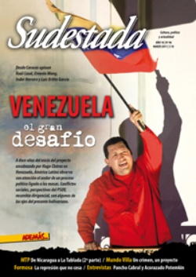

Buscar
Venezuela: El gran desafío
A doce años del inicio del proyecto encabezado por Hugo Chávez en Venezuela, América Latina observa con atención el andar de un proceso político ligado a las masas. Conflictos sociales, perspectivas del PSUV, recambio dirigencial, son algunos de los ejes del presente bolivariano. Desde Caracas opinan Raúl Cazal, Ernesto Wong, Inder Herrera y Luis Britto García. por Leandro Albani (desde Venezuela)
Edición N° 96
Marzo 2011
Revista bimensual
Comprar edición impresaSumario
- Venezuela: El gran desafío
- Los mismos de siempre
- Mundo Villa: Un crimen, un proyecto
- MTP: De Nicaragua a La Tablada (2ª Parte)
- Formosa: La represión que no cesa
- Adam Elliot: Plastilina para grandes
- Mugre y Potencia
- "Los gobernantes usan a los cantores populares para sus asados"
- Una cicatriz, una rumba, una revolución
Compartir Articulo
1. Hugo Chávez se asoma por una de las ventanas del palacio presidencial de Miraflores. La noche de Caracas es densa y cuando levanta la vista, algunas estrellas se divisan entre el resplandor de las luces de la ciudad. Observa, piensa, duda. Lleva sus ojos hacia la avenida que separa Miraflores de Casa Militar. Están ahí, esperan, forman una fila interminable. Sienten, como desde hace muchos años no lo hacían, esperanza. Chávez sabe que esa fila interminable de pobres, desposeídos, excluidos y olvidados lo votó. Como nunca antes, tal vez, ese pueblo silenciado de uno de los países más ricos del mundo tomó una decisión trascendental: llevar como presidente a uno de los suyos. Por eso, Chávez tiene en claro que lo esperan, que desean de él una señal, una mínima ayuda, un techo donde cobijar a sus hijos, un plato de comida que muchos desconocen. Pero el recién elegido presidente de Venezuela es conciente de que no será una tarea fácil. El país está devastado, el petróleo se convirtió en un regalo diario para Estados Unidos y el Estado es un diseño perfecto del neoliberalismo: burocracia, corrupción, prebendas y mafias instaladas con el Pacto de Punto Fijo en 1958, cuando se dio inicio a la Cuarta República, período en el que los gobernantes venezolanos intentaron destrozar el país y convertirlo, simplemente, en una colonia de Miami.
Pero el pueblo no lo permitió. Y Chávez sabe que ese mandato que le brindaron es único y no se puede traicionar. Por eso cierra los ojos, respira profundo y se dice que nunca va a dejar que esa telaraña perversa lo atrape. Y que sus faros son los de abajo y el ejemplo de Simón Bolívar.
2. Atrás había quedado el juramento en el Samán de Güere en 1982 junto a un puñado de militares, donde se comprometieron a no dar "tranquilidad a mi alma ni descanso a mi brazo hasta no ver rotas las cadenas que oprimen a mi pueblo por voluntad de los poderosos"; también quedaba lejano, pero latente, el Caracazo, rebelión popular que en 1989 desató un operativo represivo ordenado por el entonces presidente Carlos Andrés Pérez (CAP) y que tuvo alrededor de tres mil civiles muertos; y por supuesto, la rebelión militar que encabezó el 4 de febrero de 1992 y que fracasó, pero dejó una frase que marcaría la historia: el "por ahora" dicho en ese momento por el joven Hugo Chávez al entregarse; la cárcel, los contactos, la política y la decisión de lanzarse a presidente; y el encuentro con Fidel Castro en La Habana, cuando a nivel internacional Chávez era, con suerte, un desconocido. Por supuesto, no faltaban voces que lo apuntaban como militarote bananero.
Pero ahora Venezuela era un país endeudado, quebrado, manoseado y violado. Desesperación y determinación, y además visión y estrategia para cambiar una sociedad que en 1998 tenía una tasa de pobreza del 50,4% y de pobreza extrema del 20,3%. Esos pueden ser algunos puntos que muestran la nueva política que transita Venezuela. El rescate de la patria y el ideario bolivariano por parte de Chávez, y su incansable necesidad de unir al continente, son otros aportes que se conjugan en el proceso del país. Todo esto enfrentado a los vicios de la Cuarta República que, más allá de los actuales planes de desestabilización, todavía inyecta un veneno difícil de purgar: la burocracia y la cultura rentista surgida entre 1910 y 1920 con el descubrimiento del petróleo en el país. A esa década se puede remontar el quiebre histórico del siglo XX en Venezuela: una nación agrícola-ganadera fulminada por los brillos del petróleo. Y si de oro negro se trata, sobre territorio venezolano comenzó a volar como nunca antes el águila de Washington. El consumo energético voraz de Estados Unidos llevó a que, en 1998, el barril de petróleo costara apenas 11 dólares. Un buen negocio para la Casa Blanca que extraía crudo liviano de Venezuela, lo trasladaba al país para el consumo, mientras guardaba sus propias reservas. Peor había sido en el último gobierno de CAP, cuando el barril de petróleo había caído hasta los 2,5 dólares. Con el derroche petrolero comenzó la catarata frenética de las importaciones, que perdura hasta estos días. Si la segunda guerra mundial tuvo como una de sus consecuencias el desarrollo de la industria en varios países periféricos, en Venezuela esta etapa quedó opacada por el crudo que no dejaba de manar de la tierra. Tan es así que, según el propio gobierno venezolano, en algunas zonas del municipio Lagunillas del Estado Zulia, el terreno se hunde hasta diez centímetros al año.
¿Cómo frenar esa sangría económica y natural? ¿Cómo impulsar un cambio cultural y social que transforme ese ideario general donde, más allá de la evidente pobreza y miseria, muchos creen que, como el dinero sale de la tierra, siempre habrá, aunque la gran mayoría no tenga acceso a sus derechos básicos?
(La nota completa en la edición gráfica de Sudestada Nº 96 - marzo 2011)
Comentarios

Sudestada
El colectivo de Revista Sudestada esta integrado por Ignacio Portela, Hugo Montero, Walter Marini, Leandro Albani, Martín Latorraca, Pablo Fernández y Repo Bandini.
Articulos más vistos


LIBRERÍA SUDESTADA

Colección infantil

Distribuidora de Libros

Suscripción

Sudestada en URUGUAY

Otros articulos de esta edición
MTP: De Nicaragua a La Tablada (2ª Parte)
Después del mediodía del 23 de enero de 1989, con el cerco policial extendido y los tanques del ejército bombardeando ...
Una cicatriz, una rumba, una revolución
En un retén del Ejército, en medio de la ruta, lo detuvieron. Sabían que había una forma inconfundible de reconocer ...
"Los gobernantes usan a los cantores populares para sus asados"
Sin ser masivo, Pancho Cabral es reconocido como una de las voces de la música popular: el cantante, músico, narrador ...
Formosa: La represión que no cesa
Las muertes de Roberto López y Sixto Gómez y la treintena de heridos que dejó el 23 de noviembre de ...
Adam Elliot: Plastilina para grandes
Quien se asome al cine de animación de ese genio llamado Adam Elliot, no hallará nada previsible. Ternura sin golpes ...
Los mismos de siempre
Resulta por demás extraño: el gobierno de turno se victimiza, denuncia conspiraciones desestabilizadoras, demoniza a pequeños grupos de izquierda y ...